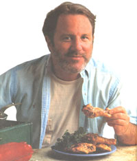
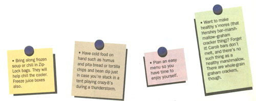
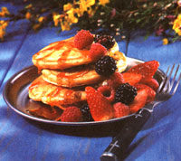
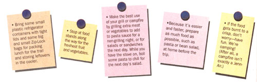
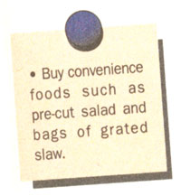
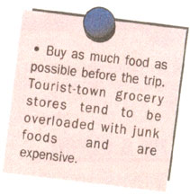
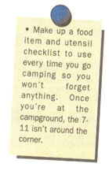

PHOTOS BY JUDD PILOSSOF;
FOOD STYLING BY MARIANN
SAUVION
Ahhh-vacation time is here again. We look forward to it with a mixture of anticipation and apprehension, remembering those days of eternal car rides when we killed time playing "auto bingo" and "slug-a-bug." No doubt most of us won't be vacationing on the French Riviera, but instead will be piling that car rack high with tents and sleeping bags-preparing for a becoming-one-with-nature experience. Although I come from a family of great outdoors people, I failed to inherit the "campout" gene. From all appearances, male members of my family were born lighting campfires, whereas I find it no trouble getting hopelessly lost just trying to find the outhouse. My relatives love to laugh at my expense as they reminisce about the time they took Anne on the mountain-climbing trip, or the time at Yosemite when she thought she was being chased by a bear (it really was a bear). Consequently, for most of my married life our family vacations have taken place in cabins or bed-and-breakfasts. That is, until last summer.
My husband caught a bad case of camping fever (probably from my relatives), which caused him to run out and buy a ton of camping equipment. This included two tents-the extra one for our teenage son so our tent wouldn't smell like a gym locker. We spent most of the following Friday attempting to squeeze everything that we'd need for our camping weekend in Michigan into our small car. When we finally arrived at our assigned campsite at sunset, I decided that it wasn't scenic enough and persuaded my husband to drive back to the park office to see what else was available. Out of the few remaining sites, I chose a beautiful setting at the bottom of the hill by the lake. Just about the time the grilled bratwurst were ready, it began to rain - and rain. Our lowland campsite quickly turned into a swamp while we sat in our waterbed-like tent eating cold brats, watching our rubber sandals and other floatables drift away. The rain stopped at noon on Sunday. At least one new family rule evolved from that weekend: Mom will never pick out another campsite. (Better yet, drop her off at the bed-and-breakfast on the way.)
Though my family may joke or complain, it's never about the food. We believe in good food around the campfire. What follows are some food tips, born of a hundred or so culinary mistakes and good intentions, to make your vacation dining a little easier.
Mix up the dry ingredients in a Zip-Lock bag at home and label it with the recipe. Take these along on the trip, adding the wet ingredients just before preparation. The granola makes the cakes sweet and crunchy, so syrup isn't really necessary. My Rocky Mountain brother takes the leftover pancakes along on hikes to munch on later with nut butter.
1 cup whole-wheat pastry flour
2 tablespoons wheat germ
1 tablespoon sugar
1/2 teaspoon baking soda
1 egg-beaten
1 cup low fat buttermilk
1 tablespoon mild oil (such as canola)
1 cup granola, broken up if it's in clumps
Pour 1 Zip-Lock bag of the above dry ingredients into a large bowl or pitcher (for shaking). Mix in the egg, buttermilk, and oil. Have a hot skillet ready over medium-high heat. Swish a tiny amount of oil on bottom. Pour 2-2 1/2-inch pancakes, sprinkling about 1 teaspoon granola on each cake as soon as it's poured. The cakes will be ready to flip after about 30 seconds. Serve with fruit and plain yogurt.
For syrup lovers: Place a few tablespoons of real maple syrup or honey in a sauce pan with a cup of raspberries, blackberries or blueberries. Heat to a boil and pour over cakes. Serves about three.
This chicken is easy to prepare for the grill because there are so few ingredients. It's up to you whether you want to remove the skin before cooking. (It will be drier.) Steaming the chicken in aluminum foil first makes for a juicier chicken and reduces grilling time. Make extra for lunch the next day.
3 pounds chicken (we use thighs because they're small and inexpensive)
1/4 cup olive oil
6 large cloves garlic-minced
1/2 cup fresh lemon juice
1 tablespoon dried oregano
or 1/4 cup fresh oregano-chopped
salt and pepper
This marinade is approximate-you don't need to measure. Stir marinade in a large bowl. Add the chicken and make sure each piece is wet with the mixture. Let it sit (in the cooler if you have room) while you prepare the fire on the grill. Remove the chicken from the bowl and wrap (three or four pieces with a little bit of marinade in each small package of aluminum foil). Partially cook the chicken in the packages. Remove the chicken and set directly on the grill, basting with a little of the marinade as it crisps on both sides.
Use leftover grilled corn and peppers if you've planned ahead. Simply mix the ingredients and serve for lunch or as an accompaniment at dinner.
6 ears grilled corn-cut off the cobs
1 small red onion or about 4 green onions-chopped
2 poblano or red peppers (or combination of peppers)-grilled, or raw-chopped
juice of 1 lime
about 1/2 teaspoon cumin
chopped cilantro if you have it
salt and pepper
about 1 tablespoon each:
balsamic or red wine vinegar
olive oil
optional: 1 15-ounce can black or red beans, rinsed
a small piece of hot pepper-seeded or minced or powdered cayenne pepper to taste
This is an easy to make lunch to take on a day trip. Leftover shredded grilled chicken is ideal. Make the pasta the day before and chill in the cooler.
112-16-ounce package spiral, shell, or bow-tie pasta-boiled, drained, and chilled overnight in a Zip-Lock bag or container
6 green onions-chopped
chopped parsley if you have it
about 3 cups chopped or sliced summer vegetables: broccoli, zucchini, summer squash, peppers, chopped spinach
about 1 cup skim mozzarella or provolone cheese-cubed
juice of 1 lemon mixed with some of your favorite bottled Italian dressing
salt, pepper, cayenne
Toss all the ingredients in a large bowl with the lemon juice dressing. Pack for the hike in small covered plastic containers with forks.
Since potatoes keep well in any weather, save some for the last day and use up whatever you have left in the cooler to make a filling lunch.
8-10 medium potatoes-I prefer white or red-skinned, cut into 1/2-inch cubes or thin circles
2 tablespoons olive or canola oil
1 large onion-halved and thinly sliced
2-3 cloves garlic (optional)
2 sweet peppers (any color, or any variety of peppers such as poblano, banana, etc.)-thinly sliced
any leftover vegetables such as chopped celery, corn cut off the cob
salt, pepper, cayenne pepper or Cajun seasoning (optional)
TOPPING SUGGESTIONS:
Plain yogurt or 'lite' sour cream (or a mixture)
grated cheese-cheddar, Parmesan, jalapenojack
"Boursin" or "Alouette" cheese spread chopped fresh tomatoes or salsa
Chop the potatoes and vegetables. Pour the oil into a large skillet and heat on the campstove over medium-high heat until the oil sizzles. Add the potatoes and let them brown on one side. Flip over and cover, cooking until they're tender but not mushy (you may have to lower the heat). Remove the lid and add the onions and vegetables, cooking until they're done. Season to taste and serve with any toppings available. Serves four to six.
For dessert here's something to top off that fresh fruit that you'll be buying at the farm stands along the way. You can mix it up with a wooden spoon when you're out and about, but I prefer to take a minute to whip it up in the blender before we leave town. (Store it in the cooler.)
1 8 ounce package 'lite' cream cheese-let it sit out for about 10 minutes
2 tablespoons orange juice concentrate
1/3 cup low-fat or non-fat plain yogurt teaspoon vanilla
2 tablespoons honey
2 tablespoons sugar
1/2 ripe (mushy) mango (optional)
Blend well. Chill in a plastic container for a few hours before serving.
1 8-ounce package 'lite' cream cheese
2 tablespoons orange juice concentrate
1/3 cup Dannon vanilla yogurt
honey or sugar to taste
Whisk together and chill in cooler.
|
 PHOTOS BY JUDD PILOSSOF FOOD STYLING BY MARIANN SAUVION |
 |
 |
|
 |
 |
 |
|
 |
|
|